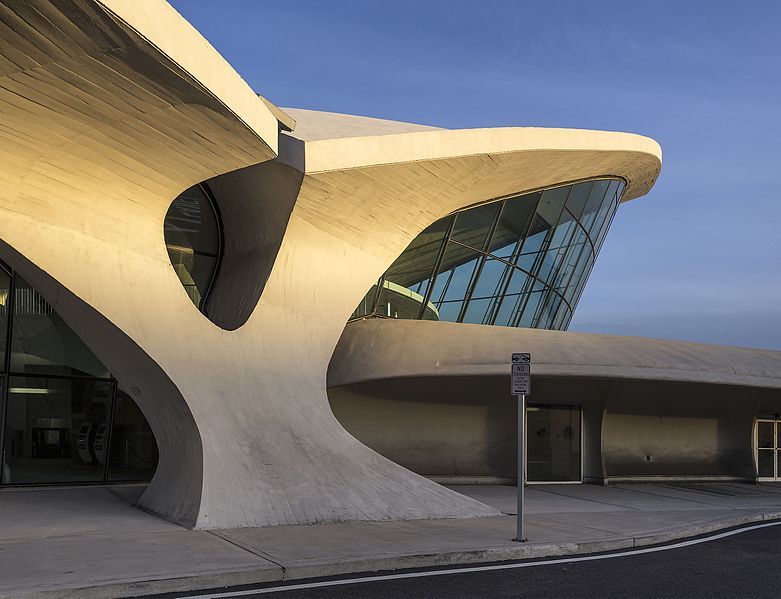
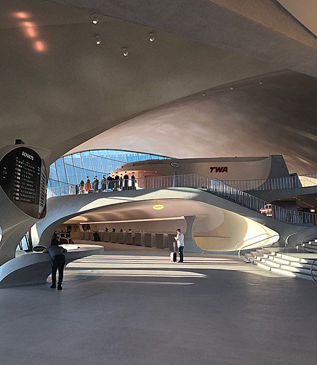
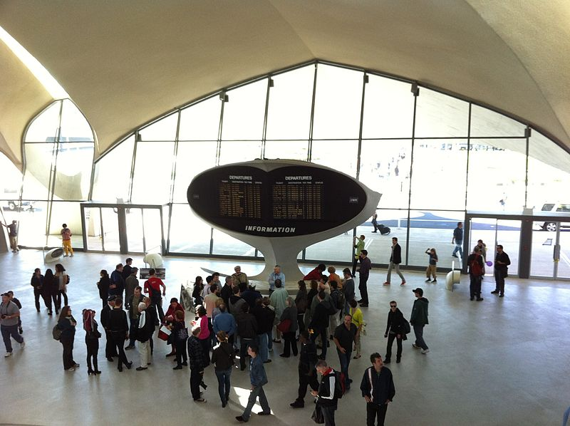
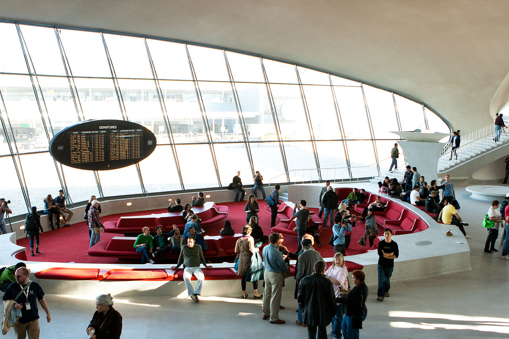
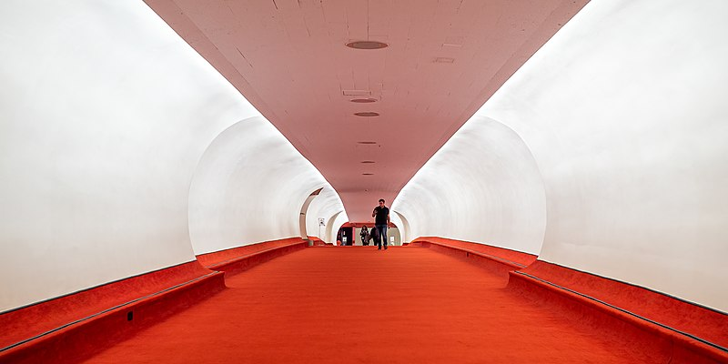

How the TWA Terminal at JFK represents an entire era of air travel
Commercial
21 February 2021
In 1930, TWA (Transcontinental and Western Air) was formed when Transcontinental Air Transport and Western Air Express merged. In 1950, the airline was renamed to Trans World Airlines as its route network became increasingly vast. TWA saw tremendous success through the 1950s into the 1960s, known now as the "golden age" of flying.
In 1956, under Howard Hughes, TWA asked Eero Saarinen to design a flight center for the airline at Idlewild Airport (now New York/JFK). Saarinen was a well known designer and architect, known best for his contributions to the Mid-century Modern style. He also designed Dulles Airport and the Gateway Arch in Saint Louis. While it's not completely clear where Saarinen's inspiration for the design came from, it symbolizes the idea of flight and the world's attitude towards aviation during that time.
When the terminal opened in 1962, the jet age was just beginning, with TWA operating aircraft such as the Boeing 707 and the Convair 880. In the coming years, passenger flows greatly increased, along with the size of aircraft. Unfortunately, the terminal's design struggled to keep up with such increased loads. The TWA terminal remained in operation until 2001 when it closed. Today, it has been restored and converted into a hotel.
A TWA Boeing 707 (N760TW), taken in 1978. Photo by Michel Gilland; GNUFDL 1.2.
Image via MCR Development
Looking at the exterior from the perspective of, say, a passenger in a car pulling up to the terminal, the form of the overall structure bears a strong resemblance of an eagle or a hawk in flight, with its wings spread. The main materials are concrete, glass, and steel.
Photo by User:Acroterion on Wikimedia Commons; CC BY-SA 3.0
One of the key characteristics of this design is its curvilinear nature. The flowing and fluid characteristics of the building again give it the sense of loftiness and flight.
Photo by James E Russell; CC BY 2.0
Photo by James E Russell; CC BY 2.0
The interior is just as beautiful as the exterior. The space is open, vaulted, and filled with light. At the front of the space is a flipping departure board.
Photo by Brett Weinstein; CC BY-SA 3.0
The TWA Flight Center features one of Saarinen's signature conversation pits. The interior is accented with red, reflecting TWA's colors while also creating visual interest.
Photo by User:Rhodododendrites on Wikimedia Commons; CC BY-SA 4.0
From the headhouse are two "flight tubes" that bring passengers to satellite gates. They were not furnished with moving walkways in order to reduce costs. The walls are rounded, with recessed overhead lighting.
The TWA Flight Center is as much an advertisement for TWA as it is a functional airline terminal building. The building certainly became an icon of the time. Although TWA is no longer around, its legacy lives on as one of the largest and most influential airlines of the jet age.